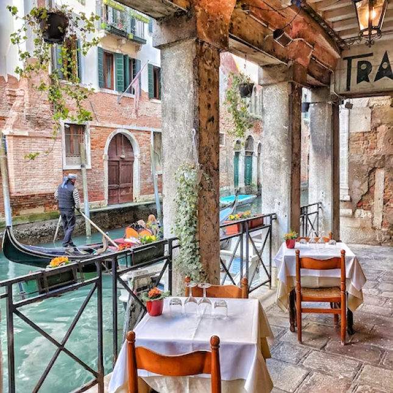
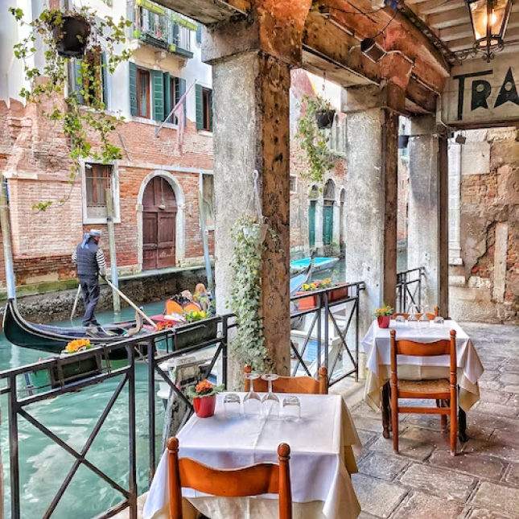
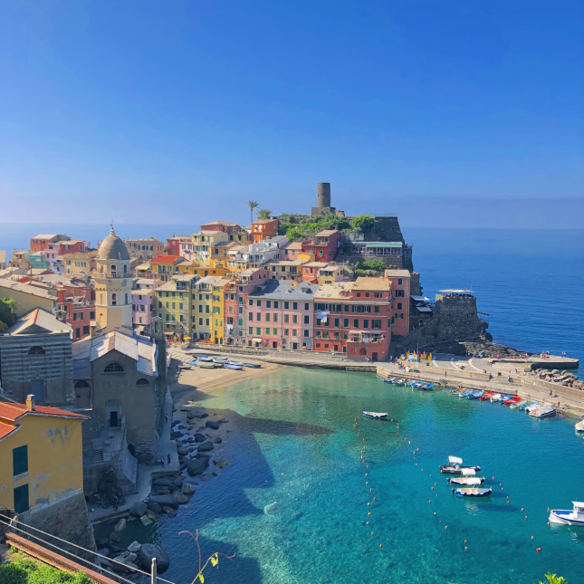
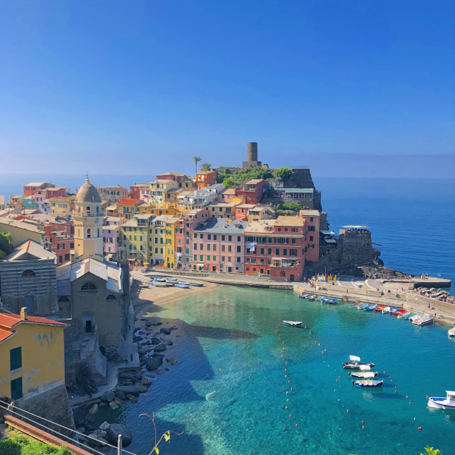

Isabela Torres
Amante de viagens, cultura e gastronomia. 🌍✈️ Aqui compartilho as histórias registradas em cada clique, explorando cantinhos fascinantes do nosso planeta a partir da movimentada cidade de São Paulo. 🏙️📸

 

 
